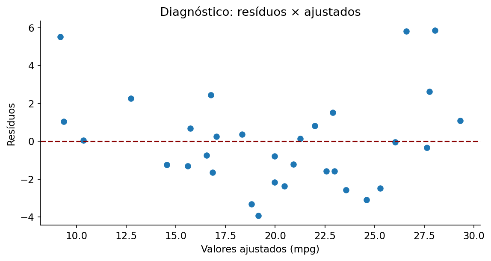

Regressão linear múltipla
Estima ou prevê uma medida considerando simultaneamente diversos fatores.
01 · O que é?
Estima ou prevê uma medida considerando simultaneamente diversos fatores.
02 · Pressupostos e como verificá-los
- Observações independentes (verifique o delineamento e eventual dependência temporal).
- Especificação adequada da média condicional (resíduos × ajustados e gráficos parciais).
- Variância residual aproximadamente constante (resíduos × ajustados).
- Normalidade dos erros para a inferência t/F exata sob o modelo usual (gráfico Q–Q dos resíduos).
- Ausência de multicolinearidade excessiva (correlações e fatores de inflação da variância).
- Ausência de pontos excessivamente influentes (distâncias de Cook e alavancagem).
Confira o delineamento da pesquisa e os gráficos exploratórios. A validade inferencial depende dos pressupostos do modelo, não apenas do resultado de um teste diagnóstico.
03 · Hipóteses e estatística de teste
Hipóteses
Estatística, estimador ou critério de ajuste
Em que:
- \(\mathbf Y\)
- vetor das respostas
- \(\mathbf X\)
- matriz de delineamento, incluindo intercepto
- \(\boldsymbol\beta\)
- vetor dos coeficientes
- \(\boldsymbol\varepsilon\)
- vetor dos erros
- \(F\)
- estatística global de comparação do modelo com o modelo contendo apenas intercepto
Os valores amostrais são obtidos diretamente dos dados; os estimadores, pesos ou coeficientes específicos são calculados pelas funções do R indicadas no exemplo. Não substitua parâmetros desconhecidos por valores arbitrários.
04 · Como interpretar os resultados?
Use F e p globais para existência de associação; \(IC_{95\%}\) e p para efeitos condicionais. \(R^2\) não implica validade preditiva externa.
Além da decisão ao nível de 5%, examine a direção e a magnitude do efeito, seu intervalo de confiança e a adequação dos pressupostos. Um valor-p não quantifica a importância prática do resultado.
05 · Como executar no R?
Examine os dados, execute a análise e compare os resultados com os valores e gráficos apresentados a seguir.
Copie o código para o RStudio ou baixe o arquivo .R para executar o exemplo completo.
06 · Exemplo de aplicação
Contexto dos dados
O conjunto mtcars reúne autonomia (mpg), massa (wt) e potência (hp) de 32 automóveis.
Objetivo da análise
Avaliar a associação entre autonomia e massa após controlar a potência, distinguindo efeitos condicionais de correlações isoladas.
# Regressão linear múltipla ----
# Ajuste e resultados ----
ajuste <- lm(mpg ~ wt + hp, data = mtcars)
print(summary(ajuste))
print(confint(ajuste))
par(mfrow = c(2, 2)); plot(ajuste); par(mfrow = c(1, 1))
print(predict(ajuste, data.frame(wt = 3, hp = 120),
interval = "prediction"))
# Visualização e diagnóstico ----
plot(mpg ~ wt, data = mtcars, pch = 19, xlab = "Massa (mil libras)", ylab = "Autonomia (mpg)")
lines(lowess(mtcars$wt, mtcars$mpg), col = "red", lwd = 2)
Saída numérica para conferência
Valores recalculados independentemente com os mesmos dados; a formatação da saída pode diferir da apresentada pelo R.
==============================================================================
coef std err t P>|t| [0.025 0.975]
------------------------------------------------------------------------------
Intercept 37.2273 1.599 23.285 0.000 33.957 40.497
wt -3.8778 0.633 -6.129 0.000 -5.172 -2.584
hp -0.0318 0.009 -3.519 0.001 -0.050 -0.013
==============================================================================
R-squared = 0.8268; adjusted R-squared = 0.8148; residual standard error = 2.5934Gráfico dos dados

O modelo explica aproximadamente 82.7% da variabilidade observada de mpg (R² amostral). Os coeficientes devem ser interpretados condicionando às demais variáveis do modelo.
Resultados e interpretação
O código apresenta uma sugestão de aplicação; a análise deve ser adaptada aos dados e ao objetivo do estudo.

Prof. Dr. Cássius Henrique Xavier Oliveira
Professor · ICTIN/UFLA · Estatística, Confiabilidade e Ciência de Dados.
Conheça minha trajetória e projetos →